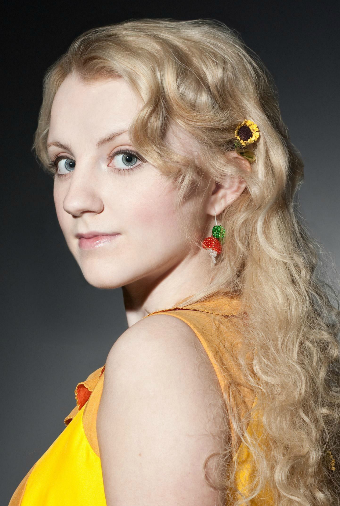

Luna Lovegood

Luna Lovegood in a golden dress with raddish earings
- Born Feburary 13th 1981
- Father Xenophilius
- Mother Pandora
- Luna grew up in Ottery St Catchpole, Devon
- Pandora died when Luna was 9 while experimenting with spells
- Learn more about Pandora and Luna's childhood in Monica Evans fanfiction Through Blue Eyes Through Blue Eyes
- Luna attended Hogwarts School of Witchcraft and Wizardy from 1992-1999
- Luna was a part of Dumbledors Army in her 5th year and was at the Battle of the Department of Misteries
- Luna was also part of the Battle of the Astronomy Tower
- Luna was also part of the Battle of Hogwarts
- After school Luna became a magizoologist
- She married Rolf Scamnder changing her name to Luna Scamnder
- Luna and Rolf had twin sons Lorcan and Lysander